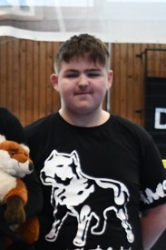

Tabulky!!
načítám hovna...
info
Nejsem real david šlinc.. majitel je Misha a Coon
Žlicpék slovník (nekompletní)
Baubáš – Arab – Arab Bříl – Byl – Was C'uhlu znamůnží? – Co tohle znamená? – What does this mean? Dačží/Daků/Ňůčží/Algi – věc – Thing Dída – Děda – Grandpa Djetvolaj – Rozšiřovat – Expand Finkpáj – Thinkpad – Thinkpad Foitčím – Holka – Girl Gounit – Goonovat – Goon Hyvržiel – Vyhrál – Won Iši – Člověk – Human Mlžení – Mlácení – Beating Mrtčím – Mrtvé – Dead Mžej – Můj – My Nejlepkešnější – Nejlepší – Best Ňjančodný – Náhodný – Random Ončvjedaj – Ovce/Skotsko – Sheep/Scotland Poseté – Posedlé – Obsessed Protžíž'es't – Protože – Because Skůrží – Skoro – Almost Sudetkešní nějmec – Sudetský němec – Sudeten German Sudetytý pelma – Sudetskou kulturu – Sudetenland culture T'es žrijkoš – Správně – Correct Tá'sy – Ty jsi – You are Tlusčím – Tlusté – Fat Upřílím/Uplžím – Upálím – I will burn Užží – Už – Already Veštinný – Všechny – All Zlákrá – Žlutá kráva – Yellow cow Zrýdciji – Zrádci – Traitors Ží pís/přís – Já jsem – I am Žrijský – Árijský – Aryan Žrijží nůčží/Žrijkoš nůcestý – dobrou noc – Good night
